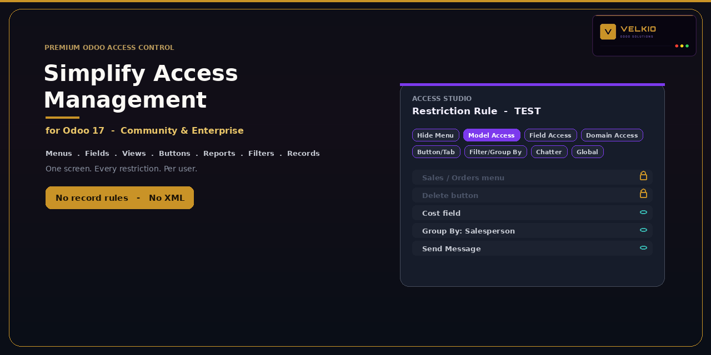
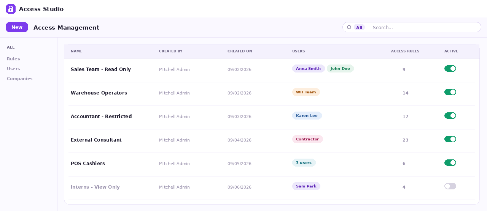
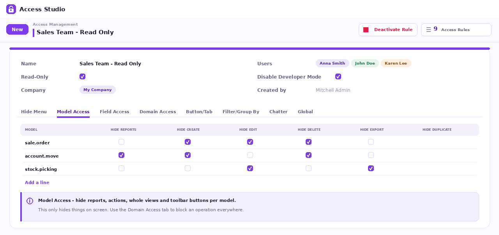

<section class="oe_container" style="box-sizing:border-box;display:block;max-width:1320px;width:100%;margin:0 auto;line-height:1.6;font-family:Arial,Helvetica,sans-serif;color:#282532;background-color:#FFFFFF;">
<div class="container py-3" style="box-sizing:border-box;width:100%;margin:0 auto;padding:0 16px;padding-top:16px;padding-bottom:16px;">
<div class="row align-items-center mb-3" style="box-sizing:border-box;display:flex;flex-wrap:wrap;margin-left:-10px;margin-right:-10px;align-items:center;margin-bottom:16px;"><div class="col-sm-4" style="box-sizing:border-box;flex:1 1 280px;min-width:0;max-width:100%;padding-left:10px;padding-right:10px;"></div><div class="col-sm-8 text-sm-right" style="box-sizing:border-box;flex:2 1 560px;min-width:0;max-width:100%;padding-left:10px;padding-right:10px;"><span class="badge p-2 m-1" style="box-sizing:border-box;display:inline-block;font-size:12px;font-weight:700;line-height:1.3;border-radius:5px;padding:8px;margin:4px;color:#714B67;background-color:#F6F1F6;">Odoo 17</span><span class="badge p-2 m-1" style="box-sizing:border-box;display:inline-block;font-size:12px;font-weight:700;line-height:1.3;border-radius:5px;padding:8px;margin:4px;color:#714B67;background-color:#F6F1F6;">Community &amp; Enterprise</span></div></div>
<section id="overview" class="p-3 p-md-4 my-3 rounded" style="box-sizing:border-box;padding:16px;margin-top:16px;margin-bottom:16px;border-radius:10px;background-color:#F6F1F6;"><div class="text-center mb-4" style="box-sizing:border-box;text-align:center;margin-bottom:24px;"><p style="box-sizing:border-box;margin:0 0 16px;overflow-wrap:anywhere;color:#9A7135;font-size:12px;letter-spacing:2px;">VELKIO ODOO SOLUTIONS</p><h1 style="box-sizing:border-box;margin:0 0 16px;line-height:1.15;font-size:42px;color:#282532;">Velkio Simplify Access Management</h1><p style="box-sizing:border-box;margin:0 0 16px;overflow-wrap:anywhere;font-size:20px;color:#714B67;">Clear controls. Focused workspaces.</p></div><div class="row mb-4" style="box-sizing:border-box;display:flex;flex-wrap:wrap;margin-left:-10px;margin-right:-10px;margin-bottom:24px;"><div class="col-6 col-md-4 col-lg-2 mb-2" style="box-sizing:border-box;flex:1 1 125px;min-width:0;max-width:100%;padding-left:10px;padding-right:10px;margin-bottom:8px;"><div class="h-100 p-3 text-center rounded" style="box-sizing:border-box;height:100%;padding:16px;text-align:center;border-radius:10px;background-color:#302236;"><div style="box-sizing:border-box;color:#E5BE7E;font-size:20px;font-weight:700;">17.0</div><div style="box-sizing:border-box;color:#F5EFF6;font-size:13px;">Odoo version</div></div></div><div class="col-6 col-md-4 col-lg-2 mb-2" style="box-sizing:border-box;flex:1 1 125px;min-width:0;max-width:100%;padding-left:10px;padding-right:10px;margin-bottom:8px;"><div class="h-100 p-3 text-center rounded" style="box-sizing:border-box;height:100%;padding:16px;text-align:center;border-radius:10px;background-color:#302236;"><div style="box-sizing:border-box;color:#E5BE7E;font-size:20px;font-weight:700;">CE / EE</div><div style="box-sizing:border-box;color:#F5EFF6;font-size:13px;">Editions</div></div></div><div class="col-6 col-md-4 col-lg-2 mb-2" style="box-sizing:border-box;flex:1 1 125px;min-width:0;max-width:100%;padding-left:10px;padding-right:10px;margin-bottom:8px;"><div class="h-100 p-3 text-center rounded" style="box-sizing:border-box;height:100%;padding:16px;text-align:center;border-radius:10px;background-color:#302236;"><div style="box-sizing:border-box;color:#E5BE7E;font-size:20px;font-weight:700;">Odoo.sh</div><div style="box-sizing:border-box;color:#F5EFF6;font-size:13px;">Cloud hosting</div></div></div><div class="col-6 col-md-4 col-lg-2 mb-2" style="box-sizing:border-box;flex:1 1 125px;min-width:0;max-width:100%;padding-left:10px;padding-right:10px;margin-bottom:8px;"><div class="h-100 p-3 text-center rounded" style="box-sizing:border-box;height:100%;padding:16px;text-align:center;border-radius:10px;background-color:#302236;"><div style="box-sizing:border-box;color:#E5BE7E;font-size:20px;font-weight:700;">On-premise</div><div style="box-sizing:border-box;color:#F5EFF6;font-size:13px;">Self-hosted</div></div></div><div class="col-6 col-md-4 col-lg-2 mb-2" style="box-sizing:border-box;flex:1 1 125px;min-width:0;max-width:100%;padding-left:10px;padding-right:10px;margin-bottom:8px;"><div class="h-100 p-3 text-center rounded" style="box-sizing:border-box;height:100%;padding:16px;text-align:center;border-radius:10px;background-color:#302236;"><div style="box-sizing:border-box;color:#E5BE7E;font-size:20px;font-weight:700;">OPL-1</div><div style="box-sizing:border-box;color:#F5EFF6;font-size:13px;">License</div></div></div><div class="col-6 col-md-4 col-lg-2 mb-2" style="box-sizing:border-box;flex:1 1 125px;min-width:0;max-width:100%;padding-left:10px;padding-right:10px;margin-bottom:8px;"><div class="h-100 p-3 text-center rounded" style="box-sizing:border-box;height:100%;padding:16px;text-align:center;border-radius:10px;background-color:#302236;"><div style="box-sizing:border-box;color:#E5BE7E;font-size:20px;font-weight:700;">User controls</div><div style="box-sizing:border-box;color:#F5EFF6;font-size:13px;">App focus</div></div></div></div><div class="row align-items-center" style="box-sizing:border-box;display:flex;flex-wrap:wrap;margin-left:-10px;margin-right:-10px;align-items:center;"><div class="col-lg-6 mb-3" style="box-sizing:border-box;flex:1 1 420px;min-width:0;max-width:100%;padding-left:10px;padding-right:10px;margin-bottom:16px;"><h2 style="box-sizing:border-box;margin:0 0 16px;line-height:1.3;font-size:27px;color:#282532;">Clear controls. Focused workspaces.</h2><p style="box-sizing:border-box;margin:0 0 16px;overflow-wrap:anywhere;font-size:16px;line-height:1.8;color:#625F6C;">Configure what selected users can see and do from Access Studio. Organize menu visibility, field behavior, interface actions and domain-based record permissions by user and company.</p><ul style="box-sizing:border-box;font-size:16px;color:#625F6C;line-height:1.9;"><li style="box-sizing:border-box;">Menus, fields and views</li><li style="box-sizing:border-box;">Domain-based record permissions</li><li style="box-sizing:border-box;">User and company scope</li></ul><a href="#setup" class="btn p-3" style="box-sizing:border-box;text-decoration:none;display:inline-block;text-align:center;line-height:1.5;padding:16px;background-color:#714B67;color:#FFFFFF;font-weight:700;border-radius:8px;">Read the setup guide</a></div><div class="col-lg-6 mb-3" style="box-sizing:border-box;flex:1 1 420px;min-width:0;max-width:100%;padding-left:10px;padding-right:10px;margin-bottom:16px;"><div class="p-3 rounded" style="box-sizing:border-box;padding:16px;border-radius:10px;background-color:#302236;"><div class="p-3 rounded" style="box-sizing:border-box;padding:16px;border-radius:10px;background-color:#FFFFFF;"><div class="row" style="box-sizing:border-box;display:flex;flex-wrap:wrap;margin-left:-10px;margin-right:-10px;"><div class="col-sm-6 mb-3" style="box-sizing:border-box;flex:1 1 180px;min-width:0;max-width:100%;padding-left:10px;padding-right:10px;margin-bottom:16px;"><div class="h-100 p-4 border rounded" style="box-sizing:border-box;height:100%;padding:24px;border:1px solid #E6DFE8;border-radius:10px;background-color:#FFFFFF;border-color:#E6DFE8;"><p style="box-sizing:border-box;margin:0 0 16px;overflow-wrap:anywhere;color:#9A7135;font-size:13px;font-weight:700;">01</p><h3 style="box-sizing:border-box;margin:0 0 16px;line-height:1.3;font-size:21px;color:#714B67;">Menus</h3><p style="box-sizing:border-box;margin:0 0 16px;overflow-wrap:anywhere;font-size:16px;line-height:1.8;color:#625F6C;">Hide selected menus and submenus</p></div></div><div class="col-sm-6 mb-3" style="box-sizing:border-box;flex:1 1 180px;min-width:0;max-width:100%;padding-left:10px;padding-right:10px;margin-bottom:16px;"><div class="h-100 p-4 border rounded" style="box-sizing:border-box;height:100%;padding:24px;border:1px solid #E6DFE8;border-radius:10px;background-color:#FFFFFF;border-color:#E6DFE8;"><p style="box-sizing:border-box;margin:0 0 16px;overflow-wrap:anywhere;color:#9A7135;font-size:13px;font-weight:700;">02</p><h3 style="box-sizing:border-box;margin:0 0 16px;line-height:1.3;font-size:21px;color:#714B67;">Fields</h3><p style="box-sizing:border-box;margin:0 0 16px;overflow-wrap:anywhere;font-size:16px;line-height:1.8;color:#625F6C;">Invisible, read-only or required</p></div></div><div class="col-sm-6 mb-3" style="box-sizing:border-box;flex:1 1 180px;min-width:0;max-width:100%;padding-left:10px;padding-right:10px;margin-bottom:16px;"><div class="h-100 p-4 border rounded" style="box-sizing:border-box;height:100%;padding:24px;border:1px solid #E6DFE8;border-radius:10px;background-color:#FFFFFF;border-color:#E6DFE8;"><p style="box-sizing:border-box;margin:0 0 16px;overflow-wrap:anywhere;color:#9A7135;font-size:13px;font-weight:700;">03</p><h3 style="box-sizing:border-box;margin:0 0 16px;line-height:1.3;font-size:21px;color:#714B67;">Models</h3><p style="box-sizing:border-box;margin:0 0 16px;overflow-wrap:anywhere;font-size:16px;line-height:1.8;color:#625F6C;">Reports, actions and view types</p></div></div><div class="col-sm-6 mb-3" style="box-sizing:border-box;flex:1 1 180px;min-width:0;max-width:100%;padding-left:10px;padding-right:10px;margin-bottom:16px;"><div class="h-100 p-4 border rounded" style="box-sizing:border-box;height:100%;padding:24px;border:1px solid #E6DFE8;border-radius:10px;background-color:#FFFFFF;border-color:#E6DFE8;"><p style="box-sizing:border-box;margin:0 0 16px;overflow-wrap:anywhere;color:#9A7135;font-size:13px;font-weight:700;">04</p><h3 style="box-sizing:border-box;margin:0 0 16px;line-height:1.3;font-size:21px;color:#714B67;">Records</h3><p style="box-sizing:border-box;margin:0 0 16px;overflow-wrap:anywhere;font-size:16px;line-height:1.8;color:#625F6C;">Read, create, update and delete</p></div></div><div class="col-sm-6 mb-3" style="box-sizing:border-box;flex:1 1 180px;min-width:0;max-width:100%;padding-left:10px;padding-right:10px;margin-bottom:16px;"><div class="h-100 p-4 border rounded" style="box-sizing:border-box;height:100%;padding:24px;border:1px solid #E6DFE8;border-radius:10px;background-color:#FFFFFF;border-color:#E6DFE8;"><p style="box-sizing:border-box;margin:0 0 16px;overflow-wrap:anywhere;color:#9A7135;font-size:13px;font-weight:700;">05</p><h3 style="box-sizing:border-box;margin:0 0 16px;line-height:1.3;font-size:21px;color:#714B67;">Forms</h3><p style="box-sizing:border-box;margin:0 0 16px;overflow-wrap:anywhere;font-size:16px;line-height:1.8;color:#625F6C;">Buttons, smart buttons and tabs</p></div></div><div class="col-sm-6 mb-3" style="box-sizing:border-box;flex:1 1 180px;min-width:0;max-width:100%;padding-left:10px;padding-right:10px;margin-bottom:16px;"><div class="h-100 p-4 border rounded" style="box-sizing:border-box;height:100%;padding:24px;border:1px solid #E6DFE8;border-radius:10px;background-color:#FFFFFF;border-color:#E6DFE8;"><p style="box-sizing:border-box;margin:0 0 16px;overflow-wrap:anywhere;color:#9A7135;font-size:13px;font-weight:700;">06</p><h3 style="box-sizing:border-box;margin:0 0 16px;line-height:1.3;font-size:21px;color:#714B67;">Companies</h3><p style="box-sizing:border-box;margin:0 0 16px;overflow-wrap:anywhere;font-size:16px;line-height:1.8;color:#625F6C;">Apply rules to selected users and companies</p></div></div></div></div></div></div></div></section>
<nav class="text-center p-2 my-3 border rounded" style="box-sizing:border-box;text-align:center;padding:8px;margin-top:16px;margin-bottom:16px;border:1px solid #E6DFE8;border-radius:10px;"><a href="#overview" class="d-inline-block px-3 py-2" style="box-sizing:border-box;text-decoration:none;display:inline-block;padding-left:16px;padding-right:16px;padding-top:8px;padding-bottom:8px;font-size:14px;color:#714B67;font-weight:700;">Overview</a><a href="#features" class="d-inline-block px-3 py-2" style="box-sizing:border-box;text-decoration:none;display:inline-block;padding-left:16px;padding-right:16px;padding-top:8px;padding-bottom:8px;font-size:14px;color:#714B67;font-weight:700;">Features</a><a href="#coverage" class="d-inline-block px-3 py-2" style="box-sizing:border-box;text-decoration:none;display:inline-block;padding-left:16px;padding-right:16px;padding-top:8px;padding-bottom:8px;font-size:14px;color:#714B67;font-weight:700;">Controls & scope</a><a href="#setup" class="d-inline-block px-3 py-2" style="box-sizing:border-box;text-decoration:none;display:inline-block;padding-left:16px;padding-right:16px;padding-top:8px;padding-bottom:8px;font-size:14px;color:#714B67;font-weight:700;">Setup</a><a href="#workflow" class="d-inline-block px-3 py-2" style="box-sizing:border-box;text-decoration:none;display:inline-block;padding-left:16px;padding-right:16px;padding-top:8px;padding-bottom:8px;font-size:14px;color:#714B67;font-weight:700;">Workflow</a><a href="#screenshots" class="d-inline-block px-3 py-2" style="box-sizing:border-box;text-decoration:none;display:inline-block;padding-left:16px;padding-right:16px;padding-top:8px;padding-bottom:8px;font-size:14px;color:#714B67;font-weight:700;">Walkthrough</a><a href="#documentation" class="d-inline-block px-3 py-2" style="box-sizing:border-box;text-decoration:none;display:inline-block;padding-left:16px;padding-right:16px;padding-top:8px;padding-bottom:8px;font-size:14px;color:#714B67;font-weight:700;">Documentation</a><a href="#faq" class="d-inline-block px-3 py-2" style="box-sizing:border-box;text-decoration:none;display:inline-block;padding-left:16px;padding-right:16px;padding-top:8px;padding-bottom:8px;font-size:14px;color:#714B67;font-weight:700;">FAQs</a><a href="#support" class="d-inline-block px-3 py-2" style="box-sizing:border-box;text-decoration:none;display:inline-block;padding-left:16px;padding-right:16px;padding-top:8px;padding-bottom:8px;font-size:14px;color:#714B67;font-weight:700;">Support</a></nav>
<div class="my-4" style="box-sizing:border-box;margin-top:24px;margin-bottom:24px;"></div>
<section id="features" class="p-3 p-md-4 my-3 rounded" style="box-sizing:border-box;padding:16px;margin-top:16px;margin-bottom:16px;border-radius:10px;background-color:#FFFFFF;"><p style="box-sizing:border-box;margin:0 0 16px;overflow-wrap:anywhere;font-size:12px;letter-spacing:2px;font-weight:700;color:#9A7135;">EVERYDAY CAPABILITIES</p><h2 style="box-sizing:border-box;margin:0 0 16px;line-height:1.3;font-size:29px;color:#282532;">See what the app helps you do</h2><div class="row" style="box-sizing:border-box;display:flex;flex-wrap:wrap;margin-left:-10px;margin-right:-10px;"><div class="col-md-6 col-lg-4 mb-3" style="box-sizing:border-box;flex:1 1 280px;min-width:0;max-width:100%;padding-left:10px;padding-right:10px;margin-bottom:16px;"><div class="h-100 p-4 border rounded" style="box-sizing:border-box;height:100%;padding:24px;border:1px solid #E6DFE8;border-radius:10px;background-color:#FFFFFF;border-color:#E6DFE8;"><p style="box-sizing:border-box;margin:0 0 16px;overflow-wrap:anywhere;color:#9A7135;font-size:13px;font-weight:700;">01</p><h3 style="box-sizing:border-box;margin:0 0 16px;line-height:1.3;font-size:21px;color:#714B67;">Menu visibility</h3><p style="box-sizing:border-box;margin:0 0 16px;overflow-wrap:anywhere;font-size:16px;line-height:1.8;color:#625F6C;">Hide selected application menus and submenus for the users covered by a rule.</p></div></div><div class="col-md-6 col-lg-4 mb-3" style="box-sizing:border-box;flex:1 1 280px;min-width:0;max-width:100%;padding-left:10px;padding-right:10px;margin-bottom:16px;"><div class="h-100 p-4 border rounded" style="box-sizing:border-box;height:100%;padding:24px;border:1px solid #E6DFE8;border-radius:10px;background-color:#FFFFFF;border-color:#E6DFE8;"><p style="box-sizing:border-box;margin:0 0 16px;overflow-wrap:anywhere;color:#9A7135;font-size:13px;font-weight:700;">02</p><h3 style="box-sizing:border-box;margin:0 0 16px;line-height:1.3;font-size:21px;color:#714B67;">Model and view controls</h3><p style="box-sizing:border-box;margin:0 0 16px;overflow-wrap:anywhere;font-size:16px;line-height:1.8;color:#625F6C;">Hide reports, server actions and view types. Configure the visibility of Create, Edit, Delete, Archive, Duplicate, Import and Export actions.</p></div></div><div class="col-md-6 col-lg-4 mb-3" style="box-sizing:border-box;flex:1 1 280px;min-width:0;max-width:100%;padding-left:10px;padding-right:10px;margin-bottom:16px;"><div class="h-100 p-4 border rounded" style="box-sizing:border-box;height:100%;padding:24px;border:1px solid #E6DFE8;border-radius:10px;background-color:#FFFFFF;border-color:#E6DFE8;"><p style="box-sizing:border-box;margin:0 0 16px;overflow-wrap:anywhere;color:#9A7135;font-size:13px;font-weight:700;">03</p><h3 style="box-sizing:border-box;margin:0 0 16px;line-height:1.3;font-size:21px;color:#714B67;">Field behavior</h3><p style="box-sizing:border-box;margin:0 0 16px;overflow-wrap:anywhere;font-size:16px;line-height:1.8;color:#625F6C;">Make selected fields invisible, read-only or required. Control opening linked records from relational fields.</p></div></div><div class="col-md-6 col-lg-4 mb-3" style="box-sizing:border-box;flex:1 1 280px;min-width:0;max-width:100%;padding-left:10px;padding-right:10px;margin-bottom:16px;"><div class="h-100 p-4 border rounded" style="box-sizing:border-box;height:100%;padding:24px;border:1px solid #E6DFE8;border-radius:10px;background-color:#FFFFFF;border-color:#E6DFE8;"><p style="box-sizing:border-box;margin:0 0 16px;overflow-wrap:anywhere;color:#9A7135;font-size:13px;font-weight:700;">04</p><h3 style="box-sizing:border-box;margin:0 0 16px;line-height:1.3;font-size:21px;color:#714B67;">Domain-based permissions</h3><p style="box-sizing:border-box;margin:0 0 16px;overflow-wrap:anywhere;font-size:16px;line-height:1.8;color:#625F6C;">Use Domain Access to configure Read, Create, Update and Delete restrictions, with an optional record filter.</p></div></div><div class="col-md-6 col-lg-4 mb-3" style="box-sizing:border-box;flex:1 1 280px;min-width:0;max-width:100%;padding-left:10px;padding-right:10px;margin-bottom:16px;"><div class="h-100 p-4 border rounded" style="box-sizing:border-box;height:100%;padding:24px;border:1px solid #E6DFE8;border-radius:10px;background-color:#FFFFFF;border-color:#E6DFE8;"><p style="box-sizing:border-box;margin:0 0 16px;overflow-wrap:anywhere;color:#9A7135;font-size:13px;font-weight:700;">05</p><h3 style="box-sizing:border-box;margin:0 0 16px;line-height:1.3;font-size:21px;color:#714B67;">Buttons, tabs and search</h3><p style="box-sizing:border-box;margin:0 0 16px;overflow-wrap:anywhere;font-size:16px;line-height:1.8;color:#625F6C;">Hide selected form buttons, smart buttons, notebook tabs, filters and group-by options.</p></div></div><div class="col-md-6 col-lg-4 mb-3" style="box-sizing:border-box;flex:1 1 280px;min-width:0;max-width:100%;padding-left:10px;padding-right:10px;margin-bottom:16px;"><div class="h-100 p-4 border rounded" style="box-sizing:border-box;height:100%;padding:24px;border:1px solid #E6DFE8;border-radius:10px;background-color:#FFFFFF;border-color:#E6DFE8;"><p style="box-sizing:border-box;margin:0 0 16px;overflow-wrap:anywhere;color:#9A7135;font-size:13px;font-weight:700;">06</p><h3 style="box-sizing:border-box;margin:0 0 16px;line-height:1.3;font-size:21px;color:#714B67;">Global and company settings</h3><p style="box-sizing:border-box;margin:0 0 16px;overflow-wrap:anywhere;font-size:16px;line-height:1.8;color:#625F6C;">Scope each rule to users and companies. Configure chatter, import/export, developer mode and relational create/edit options.</p></div></div></div></section>
<section id="coverage" class="p-3 p-md-4 my-3 rounded" style="box-sizing:border-box;padding:16px;margin-top:16px;margin-bottom:16px;border-radius:10px;background-color:#F6F1F6;"><p style="box-sizing:border-box;margin:0 0 16px;overflow-wrap:anywhere;font-size:12px;letter-spacing:2px;font-weight:700;color:#9A7135;">CONTROLS &amp; SCOPE</p><h2 style="box-sizing:border-box;margin:0 0 16px;line-height:1.3;font-size:29px;color:#282532;">Choose the right controls for your workflow</h2><div class="row" style="box-sizing:border-box;display:flex;flex-wrap:wrap;margin-left:-10px;margin-right:-10px;"><div class="col-md-6 col-lg-4 mb-3" style="box-sizing:border-box;flex:1 1 280px;min-width:0;max-width:100%;padding-left:10px;padding-right:10px;margin-bottom:16px;"><div class="h-100 p-4 border rounded" style="box-sizing:border-box;height:100%;padding:24px;border:1px solid #E6DFE8;border-radius:10px;background-color:#FFFFFF;border-color:#E6DFE8;"><p style="box-sizing:border-box;margin:0 0 16px;overflow-wrap:anywhere;color:#9A7135;font-size:13px;font-weight:700;">01</p><h3 style="box-sizing:border-box;margin:0 0 16px;line-height:1.3;font-size:21px;color:#714B67;">Interface controls</h3><p style="box-sizing:border-box;margin:0 0 16px;overflow-wrap:anywhere;font-size:16px;line-height:1.8;color:#625F6C;">Hide menus, fields, views, buttons and search options to simplify a workspace.</p></div></div><div class="col-md-6 col-lg-4 mb-3" style="box-sizing:border-box;flex:1 1 280px;min-width:0;max-width:100%;padding-left:10px;padding-right:10px;margin-bottom:16px;"><div class="h-100 p-4 border rounded" style="box-sizing:border-box;height:100%;padding:24px;border:1px solid #E6DFE8;border-radius:10px;background-color:#FFFFFF;border-color:#E6DFE8;"><p style="box-sizing:border-box;margin:0 0 16px;overflow-wrap:anywhere;color:#9A7135;font-size:13px;font-weight:700;">02</p><h3 style="box-sizing:border-box;margin:0 0 16px;line-height:1.3;font-size:21px;color:#714B67;">Record permissions</h3><p style="box-sizing:border-box;margin:0 0 16px;overflow-wrap:anywhere;font-size:16px;line-height:1.8;color:#625F6C;">Use Domain Access when you need operation restrictions and filtered record access.</p></div></div><div class="col-md-6 col-lg-4 mb-3" style="box-sizing:border-box;flex:1 1 280px;min-width:0;max-width:100%;padding-left:10px;padding-right:10px;margin-bottom:16px;"><div class="h-100 p-4 border rounded" style="box-sizing:border-box;height:100%;padding:24px;border:1px solid #E6DFE8;border-radius:10px;background-color:#FFFFFF;border-color:#E6DFE8;"><p style="box-sizing:border-box;margin:0 0 16px;overflow-wrap:anywhere;color:#9A7135;font-size:13px;font-weight:700;">03</p><h3 style="box-sizing:border-box;margin:0 0 16px;line-height:1.3;font-size:21px;color:#714B67;">Administration</h3><p style="box-sizing:border-box;margin:0 0 16px;overflow-wrap:anywhere;font-size:16px;line-height:1.8;color:#625F6C;">Select users and companies, activate or deactivate a rule, then verify behavior using a separate test account.</p></div></div></div><div class="p-3 border rounded" style="box-sizing:border-box;padding:16px;border:1px solid #E6DFE8;border-radius:10px;background-color:#FFFFFF;"><h3 style="box-sizing:border-box;margin:0 0 16px;line-height:1.3;font-size:20px;color:#714B67;">Understand the scope</h3><p style="box-sizing:border-box;margin:0 0 16px;overflow-wrap:anywhere;font-size:16px;line-height:1.8;color:#625F6C;">Hiding an interface control is different from enforcing permission on a record operation. Use Domain Access for record restrictions and test the required operations separately. Existing Odoo groups and record rules still matter; this module does not grant access that Odoo otherwise denies. Keep an unrestricted administrator account for managing configuration.</p></div></section>
<section id="setup" class="p-3 p-md-4 my-3 rounded" style="box-sizing:border-box;padding:16px;margin-top:16px;margin-bottom:16px;border-radius:10px;background-color:#FFFFFF;"><p style="box-sizing:border-box;margin:0 0 16px;overflow-wrap:anywhere;font-size:12px;letter-spacing:2px;font-weight:700;color:#9A7135;">GETTING STARTED</p><h2 style="box-sizing:border-box;margin:0 0 16px;line-height:1.3;font-size:29px;color:#282532;">Install, configure and validate</h2><div class="p-4 border rounded mb-4" style="box-sizing:border-box;padding:24px;border:1px solid #E6DFE8;border-radius:10px;margin-bottom:24px;background-color:#F8F5EF;"><h3 style="box-sizing:border-box;margin:0 0 16px;line-height:1.3;color:#282532;font-size:21px;">Before installation</h3><ul style="box-sizing:border-box;font-size:16px;line-height:1.8;color:#625F6C;"><li style="box-sizing:border-box;">Odoo 17 with the standard web module.</li><li style="box-sizing:border-box;">A deployment supporting custom addons, such as on-premise or Odoo.sh.</li><li style="box-sizing:border-box;">Grant the Access Management group to administrators who maintain Access Studio.</li><li style="box-sizing:border-box;">Prepare a separate test user and choose the companies and models to include. The advanced domain widget is bundled.</li></ul><p style="box-sizing:border-box;margin:0 0 16px;overflow-wrap:anywhere;font-size:16px;line-height:1.8;color:#625F6C;">Odoo Online does not support installation of custom Python addons. Choose a deployment that permits custom modules.</p></div><div class="row" style="box-sizing:border-box;display:flex;flex-wrap:wrap;margin-left:-10px;margin-right:-10px;"><div class="col-md-6 mb-3" style="box-sizing:border-box;flex:1 1 420px;min-width:0;max-width:100%;padding-left:10px;padding-right:10px;margin-bottom:16px;"><div class="h-100 p-4 border rounded" style="box-sizing:border-box;height:100%;padding:24px;border:1px solid #E6DFE8;border-radius:10px;background-color:#FFFFFF;border-color:#E6DFE8;"><p style="box-sizing:border-box;margin:0 0 16px;overflow-wrap:anywhere;color:#9A7135;font-size:13px;font-weight:700;">01</p><h3 style="box-sizing:border-box;margin:0 0 16px;line-height:1.3;font-size:21px;color:#714B67;">Install the module</h3><p style="box-sizing:border-box;margin:0 0 16px;overflow-wrap:anywhere;font-size:16px;line-height:1.8;color:#625F6C;">Add the module to your addons path, restart Odoo, update the Apps list and install Velkio Simplify Access Management.</p></div></div><div class="col-md-6 mb-3" style="box-sizing:border-box;flex:1 1 420px;min-width:0;max-width:100%;padding-left:10px;padding-right:10px;margin-bottom:16px;"><div class="h-100 p-4 border rounded" style="box-sizing:border-box;height:100%;padding:24px;border:1px solid #E6DFE8;border-radius:10px;background-color:#FFFFFF;border-color:#E6DFE8;"><p style="box-sizing:border-box;margin:0 0 16px;overflow-wrap:anywhere;color:#9A7135;font-size:13px;font-weight:700;">02</p><h3 style="box-sizing:border-box;margin:0 0 16px;line-height:1.3;font-size:21px;color:#714B67;">Assign an administrator</h3><p style="box-sizing:border-box;margin:0 0 16px;overflow-wrap:anywhere;font-size:16px;line-height:1.8;color:#625F6C;">Grant the Access Management group to the administrator who will maintain rules. Keep a separate unrestricted administrator account.</p></div></div><div class="col-md-6 mb-3" style="box-sizing:border-box;flex:1 1 420px;min-width:0;max-width:100%;padding-left:10px;padding-right:10px;margin-bottom:16px;"><div class="h-100 p-4 border rounded" style="box-sizing:border-box;height:100%;padding:24px;border:1px solid #E6DFE8;border-radius:10px;background-color:#FFFFFF;border-color:#E6DFE8;"><p style="box-sizing:border-box;margin:0 0 16px;overflow-wrap:anywhere;color:#9A7135;font-size:13px;font-weight:700;">03</p><h3 style="box-sizing:border-box;margin:0 0 16px;line-height:1.3;font-size:21px;color:#714B67;">Create a rule</h3><p style="box-sizing:border-box;margin:0 0 16px;overflow-wrap:anywhere;font-size:16px;line-height:1.8;color:#625F6C;">Open Access Studio and create a named rule. Select the internal users and companies to which it applies.</p></div></div><div class="col-md-6 mb-3" style="box-sizing:border-box;flex:1 1 420px;min-width:0;max-width:100%;padding-left:10px;padding-right:10px;margin-bottom:16px;"><div class="h-100 p-4 border rounded" style="box-sizing:border-box;height:100%;padding:24px;border:1px solid #E6DFE8;border-radius:10px;background-color:#FFFFFF;border-color:#E6DFE8;"><p style="box-sizing:border-box;margin:0 0 16px;overflow-wrap:anywhere;color:#9A7135;font-size:13px;font-weight:700;">04</p><h3 style="box-sizing:border-box;margin:0 0 16px;line-height:1.3;font-size:21px;color:#714B67;">Configure the workspace</h3><p style="box-sizing:border-box;margin:0 0 16px;overflow-wrap:anywhere;font-size:16px;line-height:1.8;color:#625F6C;">Use Hide Menu, Model Access, Field Access, Button/Tab, Filter/Group By and Chatter to choose the required interface controls.</p></div></div><div class="col-md-6 mb-3" style="box-sizing:border-box;flex:1 1 420px;min-width:0;max-width:100%;padding-left:10px;padding-right:10px;margin-bottom:16px;"><div class="h-100 p-4 border rounded" style="box-sizing:border-box;height:100%;padding:24px;border:1px solid #E6DFE8;border-radius:10px;background-color:#FFFFFF;border-color:#E6DFE8;"><p style="box-sizing:border-box;margin:0 0 16px;overflow-wrap:anywhere;color:#9A7135;font-size:13px;font-weight:700;">05</p><h3 style="box-sizing:border-box;margin:0 0 16px;line-height:1.3;font-size:21px;color:#714B67;">Set record permissions</h3><p style="box-sizing:border-box;margin:0 0 16px;overflow-wrap:anywhere;font-size:16px;line-height:1.8;color:#625F6C;">Use Domain Access for operation restrictions and record filters. Review the target model and domain carefully.</p></div></div><div class="col-md-6 mb-3" style="box-sizing:border-box;flex:1 1 420px;min-width:0;max-width:100%;padding-left:10px;padding-right:10px;margin-bottom:16px;"><div class="h-100 p-4 border rounded" style="box-sizing:border-box;height:100%;padding:24px;border:1px solid #E6DFE8;border-radius:10px;background-color:#FFFFFF;border-color:#E6DFE8;"><p style="box-sizing:border-box;margin:0 0 16px;overflow-wrap:anywhere;color:#9A7135;font-size:13px;font-weight:700;">06</p><h3 style="box-sizing:border-box;margin:0 0 16px;line-height:1.3;font-size:21px;color:#714B67;">Activate and verify</h3><p style="box-sizing:border-box;margin:0 0 16px;overflow-wrap:anywhere;font-size:16px;line-height:1.8;color:#625F6C;">Activate the rule and test it in a separate session as the selected user. Verify each required operation and company context.</p></div></div></div></section>
<section id="workflow" class="p-3 p-md-4 my-3 rounded" style="box-sizing:border-box;padding:16px;margin-top:16px;margin-bottom:16px;border-radius:10px;background-color:#F6F1F6;"><p style="box-sizing:border-box;margin:0 0 16px;overflow-wrap:anywhere;font-size:12px;letter-spacing:2px;font-weight:700;color:#9A7135;">DAILY OPERATION</p><h2 style="box-sizing:border-box;margin:0 0 16px;line-height:1.3;font-size:29px;color:#282532;">Follow the workflow from start to finish</h2><div class="row" style="box-sizing:border-box;display:flex;flex-wrap:wrap;margin-left:-10px;margin-right:-10px;"><div class="col-md-6 col-lg-3 mb-3" style="box-sizing:border-box;flex:1 1 210px;min-width:0;max-width:100%;padding-left:10px;padding-right:10px;margin-bottom:16px;"><div class="h-100 p-4 border rounded" style="box-sizing:border-box;height:100%;padding:24px;border:1px solid #E6DFE8;border-radius:10px;background-color:#FFFFFF;border-color:#E6DFE8;"><p style="box-sizing:border-box;margin:0 0 16px;overflow-wrap:anywhere;color:#9A7135;font-size:13px;font-weight:700;">01</p><h3 style="box-sizing:border-box;margin:0 0 16px;line-height:1.3;font-size:21px;color:#714B67;">Select</h3><p style="box-sizing:border-box;margin:0 0 16px;overflow-wrap:anywhere;font-size:16px;line-height:1.8;color:#625F6C;">Choose the users and companies.</p></div></div><div class="col-md-6 col-lg-3 mb-3" style="box-sizing:border-box;flex:1 1 210px;min-width:0;max-width:100%;padding-left:10px;padding-right:10px;margin-bottom:16px;"><div class="h-100 p-4 border rounded" style="box-sizing:border-box;height:100%;padding:24px;border:1px solid #E6DFE8;border-radius:10px;background-color:#FFFFFF;border-color:#E6DFE8;"><p style="box-sizing:border-box;margin:0 0 16px;overflow-wrap:anywhere;color:#9A7135;font-size:13px;font-weight:700;">02</p><h3 style="box-sizing:border-box;margin:0 0 16px;line-height:1.3;font-size:21px;color:#714B67;">Configure</h3><p style="box-sizing:border-box;margin:0 0 16px;overflow-wrap:anywhere;font-size:16px;line-height:1.8;color:#625F6C;">Set interface and record restrictions.</p></div></div><div class="col-md-6 col-lg-3 mb-3" style="box-sizing:border-box;flex:1 1 210px;min-width:0;max-width:100%;padding-left:10px;padding-right:10px;margin-bottom:16px;"><div class="h-100 p-4 border rounded" style="box-sizing:border-box;height:100%;padding:24px;border:1px solid #E6DFE8;border-radius:10px;background-color:#FFFFFF;border-color:#E6DFE8;"><p style="box-sizing:border-box;margin:0 0 16px;overflow-wrap:anywhere;color:#9A7135;font-size:13px;font-weight:700;">03</p><h3 style="box-sizing:border-box;margin:0 0 16px;line-height:1.3;font-size:21px;color:#714B67;">Activate</h3><p style="box-sizing:border-box;margin:0 0 16px;overflow-wrap:anywhere;font-size:16px;line-height:1.8;color:#625F6C;">Enable the rule in Access Studio.</p></div></div><div class="col-md-6 col-lg-3 mb-3" style="box-sizing:border-box;flex:1 1 210px;min-width:0;max-width:100%;padding-left:10px;padding-right:10px;margin-bottom:16px;"><div class="h-100 p-4 border rounded" style="box-sizing:border-box;height:100%;padding:24px;border:1px solid #E6DFE8;border-radius:10px;background-color:#FFFFFF;border-color:#E6DFE8;"><p style="box-sizing:border-box;margin:0 0 16px;overflow-wrap:anywhere;color:#9A7135;font-size:13px;font-weight:700;">04</p><h3 style="box-sizing:border-box;margin:0 0 16px;line-height:1.3;font-size:21px;color:#714B67;">Verify</h3><p style="box-sizing:border-box;margin:0 0 16px;overflow-wrap:anywhere;font-size:16px;line-height:1.8;color:#625F6C;">Check the affected user’s workspace and operations.</p></div></div></div></section>
<section id="screenshots" class="p-3 p-md-4 my-3 rounded" style="box-sizing:border-box;padding:16px;margin-top:16px;margin-bottom:16px;border-radius:10px;background-color:#FFFFFF;"><p style="box-sizing:border-box;margin:0 0 16px;overflow-wrap:anywhere;font-size:12px;letter-spacing:2px;font-weight:700;color:#9A7135;">PRODUCT WALKTHROUGH</p><h2 style="box-sizing:border-box;margin:0 0 16px;line-height:1.3;font-size:29px;color:#282532;">Explore the workspace</h2><p style="box-sizing:border-box;margin:0 0 16px;overflow-wrap:anywhere;font-size:16px;line-height:1.8;color:#625F6C;">These existing Access Studio images are illustrated UI mockups, not captured screenshots. They explain the configuration layout; replace them with captures from your own test database before presenting them as live screenshots.</p><div class="row align-items-center my-4 py-3 border-bottom" style="box-sizing:border-box;display:flex;flex-wrap:wrap;margin-left:-10px;margin-right:-10px;align-items:center;margin-top:24px;margin-bottom:24px;padding-top:16px;padding-bottom:16px;border-bottom:1px solid #E6DFE8;"><div class="col-lg-4" style="box-sizing:border-box;flex:1 1 280px;min-width:0;max-width:100%;padding-left:10px;padding-right:10px;"><p style="box-sizing:border-box;margin:0 0 16px;overflow-wrap:anywhere;color:#9A7135;font-weight:700;font-size:12px;">WALKTHROUGH 01</p><h3 style="box-sizing:border-box;margin:0 0 16px;line-height:1.3;font-size:24px;color:#282532;">Organize your access rules</h3><p style="box-sizing:border-box;margin:0 0 16px;overflow-wrap:anywhere;font-size:16px;line-height:1.8;color:#625F6C;">An illustrative list of rules and the users covered by each configuration.</p></div><div class="col-lg-8" style="box-sizing:border-box;flex:2 1 560px;min-width:0;max-width:100%;padding-left:10px;padding-right:10px;"><a href="screenshot_list.png" style="box-sizing:border-box;text-decoration:none;"></a></div></div><div class="row align-items-center my-4 py-3 border-bottom" style="box-sizing:border-box;display:flex;flex-wrap:wrap;margin-left:-10px;margin-right:-10px;align-items:center;margin-top:24px;margin-bottom:24px;padding-top:16px;padding-bottom:16px;border-bottom:1px solid #E6DFE8;"><div class="col-lg-4" style="box-sizing:border-box;flex:1 1 280px;min-width:0;max-width:100%;padding-left:10px;padding-right:10px;"><p style="box-sizing:border-box;margin:0 0 16px;overflow-wrap:anywhere;color:#9A7135;font-weight:700;font-size:12px;">WALKTHROUGH 02</p><h3 style="box-sizing:border-box;margin:0 0 16px;line-height:1.3;font-size:24px;color:#282532;">Configure an Access Studio rule</h3><p style="box-sizing:border-box;margin:0 0 16px;overflow-wrap:anywhere;font-size:16px;line-height:1.8;color:#625F6C;">An illustrative example of the rule form and model controls.</p></div><div class="col-lg-8" style="box-sizing:border-box;flex:2 1 560px;min-width:0;max-width:100%;padding-left:10px;padding-right:10px;"><a href="screenshot_form.png" style="box-sizing:border-box;text-decoration:none;"></a></div></div></section>
<section id="documentation" class="p-3 p-md-4 my-3 rounded" style="box-sizing:border-box;padding:16px;margin-top:16px;margin-bottom:16px;border-radius:10px;background-color:#F6F1F6;"><p style="box-sizing:border-box;margin:0 0 16px;overflow-wrap:anywhere;font-size:12px;letter-spacing:2px;font-weight:700;color:#9A7135;">DOCUMENTATION</p><h2 style="box-sizing:border-box;margin:0 0 16px;line-height:1.3;font-size:29px;color:#282532;">Your guides, in one place</h2><div class="row" style="box-sizing:border-box;display:flex;flex-wrap:wrap;margin-left:-10px;margin-right:-10px;"><div class="col-md-6 col-lg-4 mb-3" style="box-sizing:border-box;flex:1 1 280px;min-width:0;max-width:100%;padding-left:10px;padding-right:10px;margin-bottom:16px;"><div class="h-100 p-4 border rounded" style="box-sizing:border-box;height:100%;padding:24px;border:1px solid #E6DFE8;border-radius:10px;background-color:#FFFFFF;border-color:#E6DFE8;"><p style="box-sizing:border-box;margin:0 0 16px;overflow-wrap:anywhere;color:#9A7135;font-size:13px;font-weight:700;">01</p><h3 style="box-sizing:border-box;margin:0 0 16px;line-height:1.3;font-size:21px;color:#714B67;">Installation</h3><p style="box-sizing:border-box;margin:0 0 16px;overflow-wrap:anywhere;font-size:16px;line-height:1.8;color:#625F6C;">Follow the six setup steps and validate using a test account.</p></div></div><div class="col-md-6 col-lg-4 mb-3" style="box-sizing:border-box;flex:1 1 280px;min-width:0;max-width:100%;padding-left:10px;padding-right:10px;margin-bottom:16px;"><div class="h-100 p-4 border rounded" style="box-sizing:border-box;height:100%;padding:24px;border:1px solid #E6DFE8;border-radius:10px;background-color:#FFFFFF;border-color:#E6DFE8;"><p style="box-sizing:border-box;margin:0 0 16px;overflow-wrap:anywhere;color:#9A7135;font-size:13px;font-weight:700;">02</p><h3 style="box-sizing:border-box;margin:0 0 16px;line-height:1.3;font-size:21px;color:#714B67;">Daily workflow</h3><p style="box-sizing:border-box;margin:0 0 16px;overflow-wrap:anywhere;font-size:16px;line-height:1.8;color:#625F6C;">Use the illustrated walkthrough alongside the workflow guide.</p></div></div><div class="col-md-6 col-lg-4 mb-3" style="box-sizing:border-box;flex:1 1 280px;min-width:0;max-width:100%;padding-left:10px;padding-right:10px;margin-bottom:16px;"><div class="h-100 p-4 border rounded" style="box-sizing:border-box;height:100%;padding:24px;border:1px solid #E6DFE8;border-radius:10px;background-color:#FFFFFF;border-color:#E6DFE8;"><p style="box-sizing:border-box;margin:0 0 16px;overflow-wrap:anywhere;color:#9A7135;font-size:13px;font-weight:700;">03</p><h3 style="box-sizing:border-box;margin:0 0 16px;line-height:1.3;font-size:21px;color:#714B67;">Troubleshooting</h3><p style="box-sizing:border-box;margin:0 0 16px;overflow-wrap:anywhere;font-size:16px;line-height:1.8;color:#625F6C;">Check configuration, permissions and the affected user session.</p></div></div></div><div class="text-center" style="box-sizing:border-box;text-align:center;"><a class="d-inline-block p-3" style="box-sizing:border-box;text-decoration:none;display:inline-block;padding:16px;color:#714B67;font-weight:700;" href="#setup">Setup guide →</a><a class="d-inline-block p-3" style="box-sizing:border-box;text-decoration:none;display:inline-block;padding:16px;color:#714B67;font-weight:700;" href="#workflow">Workflow →</a><a class="d-inline-block p-3" style="box-sizing:border-box;text-decoration:none;display:inline-block;padding:16px;color:#714B67;font-weight:700;" href="#troubleshooting">Troubleshooting →</a></div></section>
<section id="troubleshooting" class="p-3 p-md-4 my-3 rounded" style="box-sizing:border-box;padding:16px;margin-top:16px;margin-bottom:16px;border-radius:10px;background-color:#FFFFFF;"><p style="box-sizing:border-box;margin:0 0 16px;overflow-wrap:anywhere;font-size:12px;letter-spacing:2px;font-weight:700;color:#9A7135;">TROUBLESHOOTING</p><h2 style="box-sizing:border-box;margin:0 0 16px;line-height:1.3;font-size:29px;color:#282532;">When something needs attention</h2><div class="row" style="box-sizing:border-box;display:flex;flex-wrap:wrap;margin-left:-10px;margin-right:-10px;"><div class="col-md-6 col-lg-4 mb-3" style="box-sizing:border-box;flex:1 1 280px;min-width:0;max-width:100%;padding-left:10px;padding-right:10px;margin-bottom:16px;"><div class="h-100 p-4 border rounded" style="box-sizing:border-box;height:100%;padding:24px;border:1px solid #E6DFE8;border-radius:10px;background-color:#FFFFFF;border-color:#E6DFE8;"><p style="box-sizing:border-box;margin:0 0 16px;overflow-wrap:anywhere;color:#9A7135;font-size:13px;font-weight:700;">01</p><h3 style="box-sizing:border-box;margin:0 0 16px;line-height:1.3;font-size:21px;color:#714B67;">Rule has no effect?</h3><p style="box-sizing:border-box;margin:0 0 16px;overflow-wrap:anywhere;font-size:16px;line-height:1.8;color:#625F6C;">Check whether it is active and includes the correct user and current company. Refresh the affected session after changing configuration.</p></div></div><div class="col-md-6 col-lg-4 mb-3" style="box-sizing:border-box;flex:1 1 280px;min-width:0;max-width:100%;padding-left:10px;padding-right:10px;margin-bottom:16px;"><div class="h-100 p-4 border rounded" style="box-sizing:border-box;height:100%;padding:24px;border:1px solid #E6DFE8;border-radius:10px;background-color:#FFFFFF;border-color:#E6DFE8;"><p style="box-sizing:border-box;margin:0 0 16px;overflow-wrap:anywhere;color:#9A7135;font-size:13px;font-weight:700;">02</p><h3 style="box-sizing:border-box;margin:0 0 16px;line-height:1.3;font-size:21px;color:#714B67;">Hidden action still available elsewhere?</h3><p style="box-sizing:border-box;margin:0 0 16px;overflow-wrap:anywhere;font-size:16px;line-height:1.8;color:#625F6C;">Interface visibility does not replace record permissions. Review Domain Access and the existing Odoo permissions for the operation.</p></div></div><div class="col-md-6 col-lg-4 mb-3" style="box-sizing:border-box;flex:1 1 280px;min-width:0;max-width:100%;padding-left:10px;padding-right:10px;margin-bottom:16px;"><div class="h-100 p-4 border rounded" style="box-sizing:border-box;height:100%;padding:24px;border:1px solid #E6DFE8;border-radius:10px;background-color:#FFFFFF;border-color:#E6DFE8;"><p style="box-sizing:border-box;margin:0 0 16px;overflow-wrap:anywhere;color:#9A7135;font-size:13px;font-weight:700;">03</p><h3 style="box-sizing:border-box;margin:0 0 16px;line-height:1.3;font-size:21px;color:#714B67;">Cannot open Access Studio?</h3><p style="box-sizing:border-box;margin:0 0 16px;overflow-wrap:anywhere;font-size:16px;line-height:1.8;color:#625F6C;">Check the administrator’s Access Management group and current Odoo access rights.</p></div></div></div></section>
<section id="faq" class="p-3 p-md-4 my-3 rounded" style="box-sizing:border-box;padding:16px;margin-top:16px;margin-bottom:16px;border-radius:10px;background-color:#F6F1F6;"><p style="box-sizing:border-box;margin:0 0 16px;overflow-wrap:anywhere;font-size:12px;letter-spacing:2px;font-weight:700;color:#9A7135;">QUESTIONS &amp; ANSWERS</p><h2 style="box-sizing:border-box;margin:0 0 16px;line-height:1.3;font-size:29px;color:#282532;">Check the details before installing</h2><div class="row" style="box-sizing:border-box;display:flex;flex-wrap:wrap;margin-left:-10px;margin-right:-10px;"><div class="col-md-6 mb-3" style="box-sizing:border-box;flex:1 1 420px;min-width:0;max-width:100%;padding-left:10px;padding-right:10px;margin-bottom:16px;"><div class="h-100 p-4 border rounded" style="box-sizing:border-box;height:100%;padding:24px;border:1px solid #E6DFE8;border-radius:10px;background-color:#FFFFFF;border-color:#E6DFE8;"><p style="box-sizing:border-box;margin:0 0 16px;overflow-wrap:anywhere;color:#9A7135;font-size:13px;font-weight:700;">01</p><h3 style="box-sizing:border-box;margin:0 0 16px;line-height:1.3;font-size:21px;color:#714B67;">Does hiding a button block an API operation?</h3><p style="box-sizing:border-box;margin:0 0 16px;overflow-wrap:anywhere;font-size:16px;line-height:1.8;color:#625F6C;">Hiding the button changes the interface. Configure record permissions through Domain Access when the operation must be restricted.</p></div></div><div class="col-md-6 mb-3" style="box-sizing:border-box;flex:1 1 420px;min-width:0;max-width:100%;padding-left:10px;padding-right:10px;margin-bottom:16px;"><div class="h-100 p-4 border rounded" style="box-sizing:border-box;height:100%;padding:24px;border:1px solid #E6DFE8;border-radius:10px;background-color:#FFFFFF;border-color:#E6DFE8;"><p style="box-sizing:border-box;margin:0 0 16px;overflow-wrap:anywhere;color:#9A7135;font-size:13px;font-weight:700;">02</p><h3 style="box-sizing:border-box;margin:0 0 16px;line-height:1.3;font-size:21px;color:#714B67;">Can I scope rules by company?</h3><p style="box-sizing:border-box;margin:0 0 16px;overflow-wrap:anywhere;font-size:16px;line-height:1.8;color:#625F6C;">Yes. Rules include selected users and companies. Test with the affected user in each relevant company context.</p></div></div><div class="col-md-6 mb-3" style="box-sizing:border-box;flex:1 1 420px;min-width:0;max-width:100%;padding-left:10px;padding-right:10px;margin-bottom:16px;"><div class="h-100 p-4 border rounded" style="box-sizing:border-box;height:100%;padding:24px;border:1px solid #E6DFE8;border-radius:10px;background-color:#FFFFFF;border-color:#E6DFE8;"><p style="box-sizing:border-box;margin:0 0 16px;overflow-wrap:anywhere;color:#9A7135;font-size:13px;font-weight:700;">03</p><h3 style="box-sizing:border-box;margin:0 0 16px;line-height:1.3;font-size:21px;color:#714B67;">Can I disable a rule temporarily?</h3><p style="box-sizing:border-box;margin:0 0 16px;overflow-wrap:anywhere;font-size:16px;line-height:1.8;color:#625F6C;">Yes. Use Activate Rule or Deactivate Rule to change its active state without deleting the configuration.</p></div></div><div class="col-md-6 mb-3" style="box-sizing:border-box;flex:1 1 420px;min-width:0;max-width:100%;padding-left:10px;padding-right:10px;margin-bottom:16px;"><div class="h-100 p-4 border rounded" style="box-sizing:border-box;height:100%;padding:24px;border:1px solid #E6DFE8;border-radius:10px;background-color:#FFFFFF;border-color:#E6DFE8;"><p style="box-sizing:border-box;margin:0 0 16px;overflow-wrap:anywhere;color:#9A7135;font-size:13px;font-weight:700;">04</p><h3 style="box-sizing:border-box;margin:0 0 16px;line-height:1.3;font-size:21px;color:#714B67;">Is an extra domain-widget module required?</h3><p style="box-sizing:border-box;margin:0 0 16px;overflow-wrap:anywhere;font-size:16px;line-height:1.8;color:#625F6C;">No. The advanced domain selector is bundled in this module.</p></div></div></div></section>
<section id="support" class="p-3 p-md-4 my-3 rounded" style="box-sizing:border-box;padding:16px;margin-top:16px;margin-bottom:16px;border-radius:10px;background-color:#FFFFFF;"><p style="box-sizing:border-box;margin:0 0 16px;overflow-wrap:anywhere;font-size:12px;letter-spacing:2px;font-weight:700;color:#9A7135;">VELKIO SUPPORT</p><h2 style="box-sizing:border-box;margin:0 0 16px;line-height:1.3;font-size:29px;color:#282532;">Get help with your app</h2><p style="box-sizing:border-box;margin:0 0 16px;overflow-wrap:anywhere;font-size:16px;line-height:1.8;color:#625F6C;">For setup or configuration help, include your Odoo version, module version, affected action and exact error. Remove passwords and personal data from shared images.</p><div class="p-4 rounded my-3" style="box-sizing:border-box;padding:24px;border-radius:10px;margin-top:16px;margin-bottom:16px;background-color:#302236;"><h3 style="box-sizing:border-box;margin:0 0 16px;line-height:1.3;font-size:24px;color:#FFFFFF;">Get help from Velkio</h3><a href="mailto:velkio.odoosolution@gmail.com" class="btn p-3" style="box-sizing:border-box;text-decoration:none;display:inline-block;text-align:center;line-height:1.5;padding:16px;background-color:#FFFFFF;color:#714B67;font-weight:700;border-radius:8px;">Email support</a></div><p style="box-sizing:border-box;margin:0 0 16px;overflow-wrap:anywhere;font-size:16px;line-height:1.8;color:#625F6C;">velkio.odoosolution@gmail.com</p></section>
<section id="release" class="p-3 p-md-4 my-3 rounded" style="box-sizing:border-box;padding:16px;margin-top:16px;margin-bottom:16px;border-radius:10px;background-color:#FFFFFF;"><p style="box-sizing:border-box;margin:0 0 16px;overflow-wrap:anywhere;font-size:12px;letter-spacing:2px;font-weight:700;color:#9A7135;">RELEASE INFORMATION</p><h2 style="box-sizing:border-box;margin:0 0 16px;line-height:1.3;font-size:29px;color:#282532;">Version 17.0.6.0.0</h2><p style="box-sizing:border-box;margin:0 0 16px;overflow-wrap:anywhere;font-size:16px;line-height:1.8;color:#625F6C;">Module license: OPL-1. This presentation includes Precision publisher branding, a module-specific app icon, an illustrated banner and setup documentation.</p></section>
</div>
</section>
